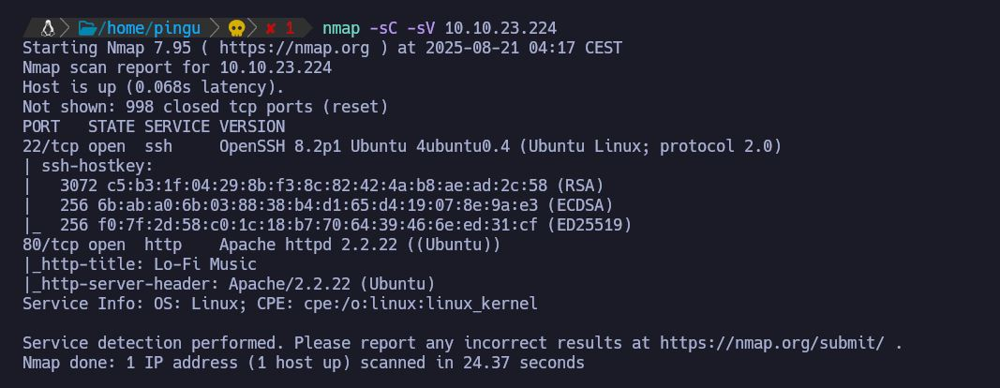
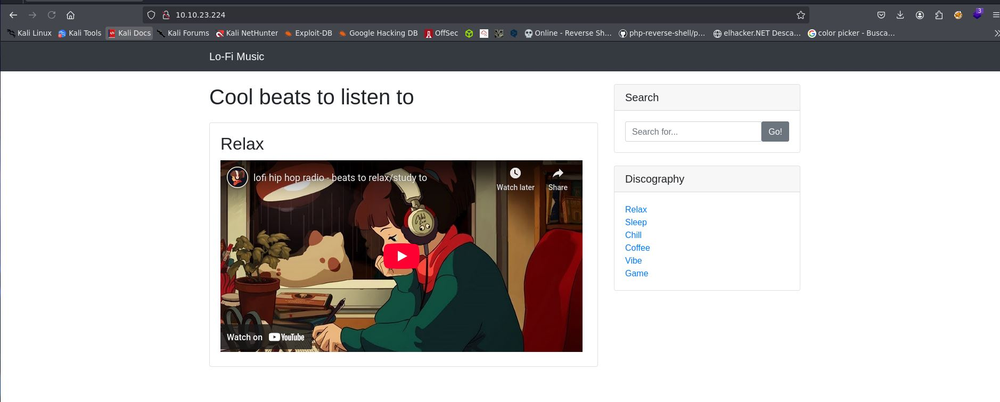
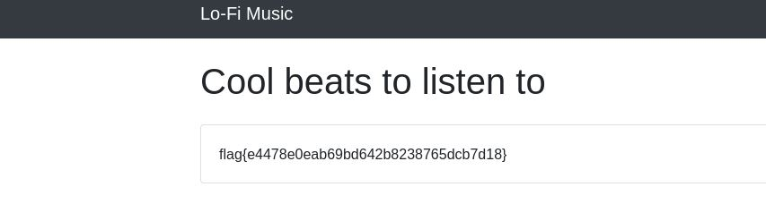

TryHackMe
Maquina: Lo-Fi
Objetivo: Vulnerar la maquina y conseguir ser root ( Privilegios de administrador) utilizando LFI (Local File Inclusion)
Dificultad: Facil
Fase 1: Escaneo de puertos
Con nmap haremos un escaneo con la ip que nos proporciona htb para ver que puertos tiene abiertos y esta utilizando la maquina.

Esta utilizando el puerto 80 asi que tiene una pagina web funcionando.

Es una pagina con un video de musica relajante para estudiar con un menu a la derecha.
Si nos fijamos cada vez que clicamos en una opcion de ese menu por ejemplo "Sleep, Relax, Chill etc..." en la barra de navegacion de arriba del navegador web cambiara.
La direccion sera : 10.10.23.224/?page=sleep.php
10.10.23.224/?page=sleep.php
10.10.23.224/?page=relax.php
10.10.23.224/?page=Chill.php
Son algunos ejemplos.....
Cuando cambiamos el valor de ?page= en la barra de navegación, el servidor intenta mostrar el archivo que le pedimos. Al usar ../ en la URL, le indicamos que vaya a carpetas anteriores dentro del sistema de archivos. Así conseguimos acceder a ficheros fuera de la web, que la paginano deberia mostrar por seguridad como el flag.txt
Entonces es tan sencillo como poner:
10.10.23.224/?page=../../..flag.txt
Y... Tenemos la bandera! bastante facil!

Los ../ en la URL significan “volver atrás una carpeta” en el sistema de archivos, igual que cd .. en la terminal. Repitiéndolos varias veces podemos retroceder hasta llegar a la raíz / y desde ahí abrir archivos como flag.txt
Conclusion: Una maquina bastante sencilla y rapida que si sabes como funciona LFI lo sacas bastante rapido.